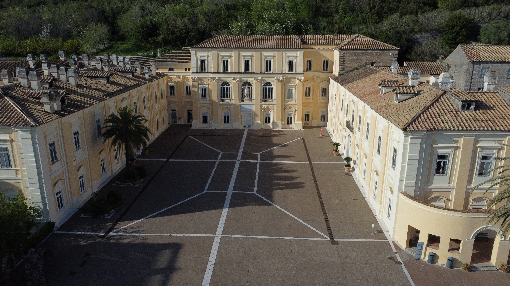
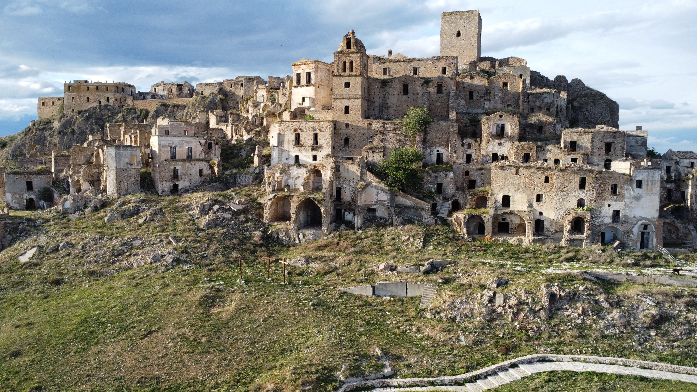

Belvedere di San Leucio
Il Complesso Monumentale del Belvedere di San Leucio è un sito borbonico nato dal sogno utopico di re Ferdinando IV, celebre per la sua antica manifattura della seta e il suo codice di leggi.
Questa pagina è stata creata per essere ospitata gratuitamente su GitHub Pages

Il Complesso Monumentale del Belvedere di San Leucio è un sito borbonico nato dal sogno utopico di re Ferdinando IV, celebre per la sua antica manifattura della seta e il suo codice di leggi.

Torre Normanna e Chiesa di San Nicola Vescovo